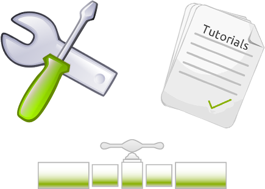

gkno
gkno is an effort to create a set of NGS resources to guide users in navigating the sometimes tricky world of cutting edge NGS software. Here you'll find tools, pipelines and tutorials that provide optimal solutions for the analysis of diverse problems in a wide variety of organisms.
get started
A good way to start is to clone the first tutorial and follow the instructions here.
$ git clone http://git.io/abc123

opensource
The gkno project itself is an open source effort with all tools, pipelines, instructions, and tutorials forkable and contributable via github.
Additionally, gkno makes use of many great open source software in the tutorials and pipelines.
about us
We are a group of tool developers from the Marthlab at Boston College. We create software for the analysis of next-generation sequencing data.